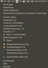

Wetteranzeige
Zum Verständnis dieses Artikels sind folgende Seiten hilfreich:
Über Sinn und Unsinn einer Wetteranzeige auf dem Computer – statt einen Blick aus dem Fenster zu werfen – kann lange diskutiert werden. Auf die Frage "Wie wird das Wetter heute?" lautet die Standard-Antwort auch ohne Wetteranzeige: "So wie gestern" – was in Mitteleuropa immerhin zu 50 bis 70 % zutrifft... siehe auch Wettervorhersage.
Aber es muss ja nicht immer das Wetter vor Ort sein... warum nicht mal das Wetter Zuhause anzeigen lassen, während man in der Ferne weilt? Oder vom Wetter auf Hawaii träumen? Viele Wetterstationen sind über das Internet zugänglich und die jeweiligen Informationen nicht nur über Internetseiten oder Google Earth verfügbar.
In dieser Übersicht werden einige Programme zur Wetteranzeige aufgeführt. Prinzipiell gibt es zwei Möglichkeiten: entweder wird die Wetteranzeige als Miniprogramm in die Taskleiste (Panel) eingebettet oder läuft als sog. Desklet (auch "Widget" oder "Gadget" genannt) direkt auf dem Desktop. Ausnahmen sind izulu und myDesktopCalendar, die jeweils ein Hintergrundbild mit Wetterinformationen erstellen.
Um die Antwort auf eine sehr häufig gestellte Frage "Warum ist mein Wohnort nicht in der Standortauswahl enthalten?" vorweg zu nehmen: Wetterdaten stehen nicht grundsätzlich kostenlos zur Verfügung. Daher bedienen sich viele Programme bei den Wetterstationen verschiedener Flughäfen. Und nicht jeder Ort hat einen Flughafen... Im Zweifelsfall also einen Ort (mit Flugplatz) in der Nähe auswählen.
Hinweis:
Manche Programme erwarten eine Code-Nummer für die Wetteranzeige. Berlin hat z.B. GMXX0007. Weitere Informationen zur Ermittlung der Code-Nummer gibt es hier.
Unity¶

My-Weather-Indicator¶
My-Weather-Indicator  ist ein Applet für die Benachrichtigungsanzeige (Indikator Applet), dass sich schön in das Panel einfügt und viele Wetterinformationen und weitere Angaben wie z.B. Sonnenauf- und untergang für bis zu zwei Orte zeigt. Wer möchte, kann sich zusätzlich ein Widget auf dem Desktop oder Benachrichtigungen anzeigen lassen.
ist ein Applet für die Benachrichtigungsanzeige (Indikator Applet), dass sich schön in das Panel einfügt und viele Wetterinformationen und weitere Angaben wie z.B. Sonnenauf- und untergang für bis zu zwei Orte zeigt. Wer möchte, kann sich zusätzlich ein Widget auf dem Desktop oder Benachrichtigungen anzeigen lassen.
My-Weather-Indicator ist nicht in den offiziellen Paketquellen enthalten. Zur Installation muss man daher auf ein "Personal Package Archiv" (PPA) [2] ausweichen, wenn man das Programm nicht selbst aus dem Quellcode kompilieren möchte.
Hinweis:
In diesem PPA sind weitere Fremdpakete enthalten. Um Problemen mit den offiziellen Paketquellen vorzubeugen, wird empfohlen, das PPA nach der Installation wieder zu deaktivieren oder Apt-Pinning zu nutzen.
Adresszeile zum Hinzufügen des PPAs:
ppa:atareao/atareao
Hinweis!
Zusätzliche Fremdquellen können das System gefährden.
Ein PPA unterstützt nicht zwangsläufig alle Ubuntu-Versionen. Weitere Informationen sind der  PPA-Beschreibung des Eigentümers/Teams atareao zu entnehmen.
PPA-Beschreibung des Eigentümers/Teams atareao zu entnehmen.
Damit Pakete aus dem PPA genutzt werden können, müssen die Paketquellen neu eingelesen werden.
Nach dem Aktualisieren der Paketquellen kann folgendes Paket installiert [1] werden:
my-weather-indicator (ppa)
 mit apturl
mit apturl
Paketliste zum Kopieren:
sudo apt-get install my-weather-indicator
sudo aptitude install my-weather-indicator
Wer davor zurück scheut, wegen eines einzelnes Pakets gleich ein komplettes PPA einzubinden (und anschließend wieder zu deaktivieren), kann sich auch ein einzelnes Fremdpaket  herunterladen und manuell [3] installieren. Nachteilig ist, dass man sich um Aktualisierungen nun selbst kümmern muss.
herunterladen und manuell [3] installieren. Nachteilig ist, dass man sich um Aktualisierungen nun selbst kümmern muss.
Die Bedienung ist weitestgehend selbsterklärend. Falls der Start scheitern sollte, die Programmdatei liegt unter /opt/extras.ubuntu.com/my-weather-indicator/bin/my-weather-indicator und die Einstellungen unter ~/.config/my-weather-indicator/.
GNOME 3¶
gnome-shell-extension-weather¶
gnome-shell-extension-weather ist speziell für den Einsatz unter GNOME 3 konzipiert. Siehe GNOME Shell/Extensions/Übersicht.
Weather¶
Weather@dschaerf  bietet eine aktuelle Alternative zur gnome-shell-extension-weather. Mehr Details sind im Artikel GNOME Shell/Extensions/Übersicht zu finden.
bietet eine aktuelle Alternative zur gnome-shell-extension-weather. Mehr Details sind im Artikel GNOME Shell/Extensions/Übersicht zu finden.
OpenWeather¶
Eine weitere Möglichkeit ist OpenWeather . Die Wetterinformationen werden von OpenWeatherMap bereitgestellt.
MATE¶
Die im Panel der Desktop-Umgebung MATE enthaltene Uhr bietet im Zusammenspiel mit einer Ortsangabe Informationen zur aktuellen Wetterlage, Temperatur und Wind. Hierzu wählt man zunächst in den Einstellungen des Applets den gewünschten Ort aus. Anschließend klappt man den Kalender durch Klick auf die Uhrzeit auf und hat dort unter "Orte" die gewünschten Wetterinformationen (die verkürzt auch links neben der Uhrzeit erscheinen).
Wetterbericht¶
Ein eigenständiges Applet für das MATE-Panel. Besonders interessant ist hier die Möglichkeit, Wetterbilder mit Linksklick ( ) anzuzeigen. Dazu mittels Rechtsklick (
) anzuzeigen. Dazu mittels Rechtsklick ( ) und "Einstellungen -> Allgemein -> Radarkarte aktivieren -> Benutzerdefinierte Adresse für Radarkarte verwenden" die Grafikadresse (URL) einbinden. Beispiele:
) und "Einstellungen -> Allgemein -> Radarkarte aktivieren -> Benutzerdefinierte Adresse für Radarkarte verwenden" die Grafikadresse (URL) einbinden. Beispiele:
| Regenradar | |
| Region | Benutzerdefinierte Adresse (URL) |
| Deutschland, klein | http://image.weather.com/images/sat/germany_sat_440x297.jpg |
| Deutschland, groß | http://image.weather.com/images/sat/germany_sat_720x486.jpg |
| Europa, klein | http://image.weather.com/images/sat/europesat_440x297.jpg |
| Europa, groß | http://image.weather.com/images/sat/europesat_720x486.jpg |
{kind=link}
{kind=link}
{kind=link}
{kind=link}
Weitere Bilder bzw. Karten (z.T. animiert) sind im Forum zu finden.
KDE¶
Hier helfen die ab KDE Version 4.x mittels Plasma realisierten Miniprogramme ("Plasmoide") weiter. Ab der KDE Version 4.3 kann man auch ein wetterabhängiges Hintergrundbild einstellen. Bei älteren KDE Versionen (aber mind. Version 4.x) hilft das Weather Wallpaper Plugin weiter. Neben den integrierten Wetteranzeigen gibt es weitere Möglichkeiten.
Customizable Weather Plasmoid (CWP)¶
Eine Alternative ist das Customizable Weather Plasmoid (CWP). Der Paketname lautet plasma-widget-cwp (ab Ubuntu 11.04).
yaWP¶
Eine weitere Möglichkeit stellt das Yet Another Weather Plasmoid dar. Der Paketname lautet plasma-widget-yawp.
Xfce¶
Wetter-Applet¶
Das Wetter-Applet für das Xfce Panel kann zwar keine Radarkarten anzeigen, glänzt dafür aber mit einer 5-tägigen Wetterprognose.
LXDE¶
Da keine integrierte Wetteranzeige vorhanden ist, weicht man auf ein externes Programm wie beispielsweise Gis Weather aus.
Weitere Programme¶
Wer mit den Möglichkeiten der eigenen Desktop-Umgebung unzufrieden ist, kann auch desktop-unabhängige Lösungen einsetzen. Eine weitere Alternative können Add-Ons für den jeweiligen Webbrowser sein.

Ansiweather¶
Ansiweather ist ein Shell-Skript, das Wetterinformationen von OpenWeatherMap bezieht und diese im Terminal bzw. in einer virtuellen Konsole farbig anzeigen kann. Es kann entweder als alleinstehendes Programm oder in anderen Skripten verwendet werden.
Cairo-Dock¶
Obwohl eigentlich ein Anwendungsstarter, ist ein optisch sehr ansprechendes Wetter-Applet enthalten. Weitere Informationen zu Cairo-Dock.
conky¶
Auch der Systemmonitor conky kann - unabhängig von der Desktop-Umgebung - aktuelle Wetterdaten anzeigen. Die Conky weather+moon scripts zeigen entsprechende Möglichkeiten.
Desklets¶
Verschiedene Lösungen wie GDesklets oder Screenlets beinhalten ebenfalls Module zur Wetteranzeige. Das Bild rechts zeigt das Screenlet Clear Weather .
finger@graph.no¶
Eine weitere Möglichkeit für die Kommandozeile bietet der Dienst finger@graph.no . Voraussetzung ist die Installation des folgenden Pakets:
finger (ab Ubuntu 14.04 in universe)
mit apturl
Paketliste zum Kopieren:
sudo apt-get install finger
sudo aptitude install finger
Die Nutzung erfolgt dann unter Angabe des Orts. Beispiel:
finger berlin@graph.no
-= Meteogram for germany/berlin/berlin =-
'C Rain (mm)
19
17
15 ============
13 ===^^^^^^ ---^^^===
11 ^^^
9 ^^^
7--- ^^^
5 ------ ^^^^^^^^^
3 =--^^^^^^ ' | 2 mm
1 | | | | | | 1 mm
00 01 02 03 04 05 06_07_08_09_10_11_12_13_14_15_16_17_18_19 20 21 Hour
NW W W S SE SE SE SE SE SE SE SE SE SE SE S S SW SW SW SW SW Wind dir.
2 1 0 0 2 2 3 3 3 4 5 6 7 7 8 8 9 10 8 7 6 6 Wind(mps)
Legend left axis: - Sunny ^ Scattered = Clouded =V= Thunder # Fog
Legend right axis: | Rain ! Sleet * Snow
[Peace, love, linux.]Weitere Hilfe zur Syntax erhält man mit:
finger info@graph.no
Experten-Info:
Statt des inzwischen veralteten Finger-Protokolls kann auch das modernere HTTP eingesetzt werden: siehe wttr.in weiter unten.

Gis Weather¶
Gis Weather ist ein weiteres Desklet zur Anzeige aktueller Wetterdaten und Vorhersagen. Die Wetterdaten können entweder von Gismeteo , AccuWeather oder OpenWeatherMap bezogen werden. Mit verschiedenen Designs, Themen und Symbolen kann man das Aussehen auf vielfältige Art und Weise dem eigenen Geschmack anpassen.
izulu¶
Ein zum Wetter passendes Hintergrundbild für den Desktop inklusive Vorhersage und/oder Temperaturanzeige? izulu machts möglich. Inspiriert von den wetterabhängigen Hintergrundbildern in KDE SC, aber nicht auf eine bestimmte Desktop-Umgebung festgelegt. Eine Alternative kann das Programm Dynamic Wallpaper sein.
myDesktopCalendar¶
myDesktopCalendar ist zwar in erster Linie ein (transparenter) Terminkalender für den Desktop, zeigt auf Wunsch aber auch einen Wetterbericht an.
Sunshine¶
Sunshine ist eine Wettervorhersage für den Linux-Desktop. In einem transparenten Fenster ohne Umrandung wird das Wetter für die nächsten sieben Tage angezeigt. Die Wetterdaten werden von Openweathermap bezogen. Es wird von rhersel entwickelt und betreut.
wttr.in¶
Eine dritte Möglichkeit für die Kommandozeile bietet wttr.in . Voraussetzung ist die Installation eines der folgenden Programme: cURL, HTTPie oder wget.
Die Nutzung erfolgt unter Angabe des Orts. Beispiele:
curl wttr.in/Berlin http GET wttr.in/Berlin wget -qO- wttr.in/Berlin
oder für die Ausgabe auf Deutsch:
curl wttr.in/Berlin?lang=de http GET wttr.in/Berlin?lang=de wget -qO- wttr.in/Berlin?lang=de
Ausgabe (verkürzt):
Weather for City: Berlin, Germany
_`/"".-. Light rain shower
,\_( ). 9 – 13 °C
/(___(__) → 31 km/h
‘ ‘ ‘ ‘ 10 km
‘ ‘ ‘ ‘ 1.1 mm Wer Ortsnamen sucht, die Leerzeichen enthalten, nutzt folgende Variante ("" oder + statt Leerzeichen):
curl wttr.in/"ORTS NAME" http GET wttr.in/"ORTS NAME" wget -qO wttr.in/ORTS+NAME
Man kann auch nach anderen Orten suchen (nicht nur nach Städten/Ortschaften):
curl wttr.in/~Nordpol http GET wttr.in/~Nordpol wget -qO wttr.in/~Nordpol
Weitere Informationen liefert der Befehl:
curl wttr.in/:help http GET wttr.in/:help wget -qO wttr.in/:help
Hinweis:
Alternativ kann man auch einen Kommandozeilenbrowser wie w3m (oder einen beliebigen anderen Webbrowser) nutzen, um wttr.in anzuzeigen.
- Erstellt mit Inyoka
-
 2004 – 2017 ubuntuusers.de • Einige Rechte vorbehalten
2004 – 2017 ubuntuusers.de • Einige Rechte vorbehalten
Lizenz • Kontakt • Datenschutz • Impressum • Serverstatus -
Serverhousing gespendet von